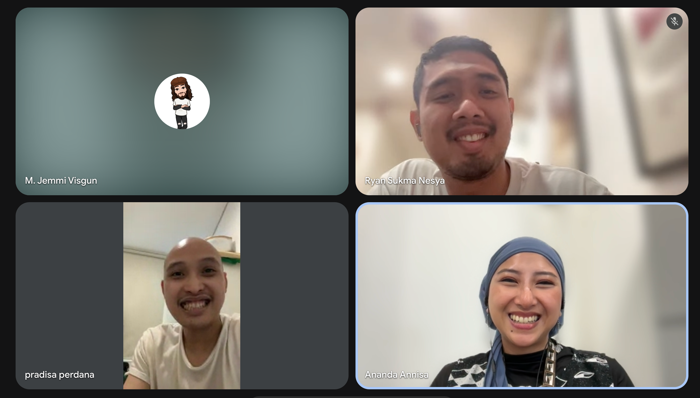
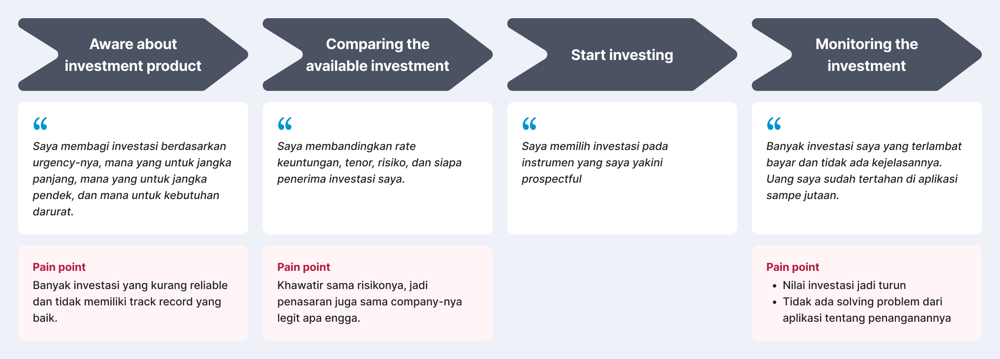

Grassroots Growth Series: Impact Investing for Urban Lenders
Achievement
Grassroots Growth Series product metrics, Jan to Sep 2026
Rp2B
Disbursed to borrowers
18K+
Monthly new user
320K
Registered investor
What is Grassroots Growth Series?
Grassroots Growth Series is an impact investing product for Amartha's urban lenders. Their money is channeled to micro and small entrepreneurs (UMKM) across rural Indonesia and spread across many borrowers at once, so each lender's capital is diversified and the chance of loss is reduced. The tiers carry different rates, letting lenders match the product to their own risk appetite, while every rupiah still funds real businesses on the ground.
Background
Amartha previously ran an investment product that channeled funds to a single, selected borrower. That product saw a high rate of repayment failure from borrowers, which pulled down user retention. In response, Amartha developed a new investment concept that spreads funds across a group of borrowers instead, so each investor's assets are more diversified and risk is minimized. This new investment product is now positioned as Amartha's primary investment offering, both for retaining existing users and for acquiring new ones.
Main goal
Provide a better investment scheme for investors, while generating more business value for the company.
User research: Understanding investors

Investors look for diversification.
Among affluent participants, the largest group (31.25%) prioritizes diversification, spreading risk across assets. Capital preservation (low-risk investment) and high returns (at higher risk) follow, each at 25%. In short, affluent users are open to new instruments that protect the value of their money and grow it.
Liquidity is still a concern, especially for higher-risk investments.
Investors tend to associate higher-risk investing with instruments like stocks or crypto, and the moment one stops performing as they expect, they liquidate it. They also expect the rules to differ from product to product, including penalties for early divestment.
Impact is part of what motivates them to invest.
What draws investors to Amartha is the social impact on women-led MSMEs, with the Grameen method (tanggung renteng, or group liability) acting as the built-in risk mitigation. Many were curious what other safeguards Amartha has in place to keep repayment quality high.
User journey map
From the research, I mapped how investors approach investing today, a reference point for the rest of the design.

Crafting the solution
Because investors actively seek diversification, Grassroots Growth Series fits their behavior well: by design, each investor's funds are spread across many borrowers. From these insights, we shaped the product around three flows that mirror how investors manage money: investing across many borrowers (invest), keeping an eye on it (monitor), and taking it back when circumstances change (divest).
Highlighted flow: invest flow
Investors want to match an investment to their own risk appetite, and they want to understand the details before they commit. The invest flow leads with tier choice, then opens a detail page that lays out the scheme, the returns, and who receives the funds.
Opportunity
| Rationale | Opportunity | Impact |
|---|---|---|
| Each investor has their own risk appetite | Investment tiers with distinct specs: Dynamic (high risk, Rp250M min, 14% p.a.), Progressive (mid risk, Rp100M min, 11% p.a.), Balanced (low risk, Rp1M min, 5% p.a.) | Investors are free to pick the tier that fits them |
| Investors need to study the details before committing | An investment detail page covering the essentials: the scheme, the returns, and who receives the funds | Clarity before investors commit |
| Investors want easy liquidity as a safeguard if an investment underperforms | A flexible divest process, with an early-withdrawal penalty before 12 months to protect the business | A clear exit for investors, while the penalty keeps Amartha's funding stable |
Information architecture + user flow
Here is the IA and flow, mapped through breadboarding.
Image needed: invest flow information architecture, breadboarding
Try it yourself
This is a fully interactive Figma prototype of the invest flow, from picking an investment tier to confirming the investment.
Click and scroll inside the screen to try it!
Highlighted flow: monitor & divest flow
Once invested, lenders want to see how their money is performing and to take it back when circumstances change, such as medical costs or an unplanned expense. The flow gives them visibility into each asset and a clear, rule-based way to withdraw.
Opportunity
| Rationale | Opportunity | Impact |
|---|---|---|
| Investors need to monitor their investment to make decisions about their assets | An asset detail page showing each asset's state, such as return history and activity history | Investors can act on real information and stay in control |
| Investors need liquidity in their investments | A flexible withdrawal feature, available monthly and in any amount | Builds a sense of security and trust in the product |
| Amartha needs to protect business stability and cash flow, so assets cannot be withdrawn too freely | A withdrawal fee for assets younger than 12 months | Protects the company's cash flow |
Information architecture + user flow
Here is the IA and flow, mapped through breadboarding.
Image needed: monitor & divest flow information architecture, breadboarding
Try it yourself
This is a fully interactive Figma prototype of the monitor & divest flow, from checking an asset's status to confirming the withdrawal.
Click and scroll inside the screen to try it!
Built with a local component library

- For this project I built and maintained my own components and variants in Figma, evidence that I can create and keep a design system consistent at the project level.
- The library also sped up my own work, since many components were reused across screens, and other designers picked them up too, on cross-team projects touching Grassroots Growth Series.
Summary
Lesson learnt
- This project shaped how I understand an investor's thought process before committing to a product, so I now know what they weigh when choosing an investment and how they expect to manage it afterward.
Next iteration
- To grow new user acquisition, we will build a referral program.
- We will keep iterating on the investment catalog's specs to find what best fits the investor market.
Other projects
Celengan: Investment for Rural Women Entrepreneurs
Amartha
Mentoring Potential Talent Into Their UX Dream Jobs
Dibimbing.id
Helping Field Officers Monitoring Their Team and Borrower Performance through Dashboard
Amartha
Improving Buyer's Discovery and Learning Experience
Tokopedia
Providing Payment Experience for Cashier and Customer
Moka (GoTo Group)